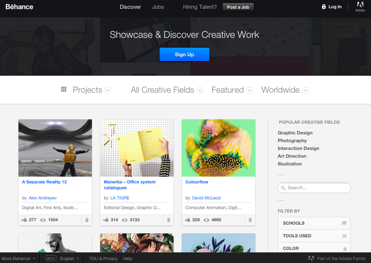

An art blog I recently discovered is This Is Colossal. Here is a link to it!
I use this website to keep track and up to date with art, design, and photography. Its a great source to see what is going on in the world of art and design. It is also a nice example of a responsive web page.
A design blog I discovered recently is Web Designer Depot. Here is a link to it!
The website seems vibrant and playful. Its a little busy, in my opinion, but I like that it only has 4 basic categories to navigate between, all of which are related to web designing for the most part. I appreciate the freebies category a lot.
A design blog I discovered recently is Awwwards. Here is a link to it!
Awwwards has been a great blog to read. I like its clean, minimalistic feel. I really ike the choice of sans-serif fonts (I'm biased towards sans-serif fonts). It also helps keep me updated with design news all over the world.
One of my favorite YouTube designers is Will Paterson. Here is a link to it!
He is a great graphic designer himself and he creates video content that teaches people his tricks and gives tips and tutorials on how to do certain graphic design work and typography work.
One of my favorite creative content websites is YouTube. You can find an array of various types of videos. Here is a link to it!
Although this isn't directly related to design and art, one of my favorite youtubers is LeendaD. She creates great comedy videos with great plots and creative content. Here is a link to it!
The goal of an adaptive and responsive website are the same: to change the appearance of a browser environment based on the resolution of the screen and type of technology/device you are viewing the website on.
Adaptive websites have layouts that change based on specific conditions of the browser. These conditions include width, resolution, and/or orientation of the browser at which you are viewing the browser. All these adaptive changes are triggered by different stylesheets. You can think of adaptive websites as snapping to certain sizes triggered by these different style sheets as you change the size of the browser and screen.
Responsive websites have layouts that respond to properties of a browser at any given point. Despite browser with changes, a responsive website will adjust its layout and functionality in a way that best optimizes and suits the browser size/screen. You can think of responsive websites as flowing size changes as you change of the size of the browser and screen.
Both adaptive and responsive websites add value to websites as they make viewing a website more user friendly and visually pleasing. Not everyone has the same web browser, browser size, and device. However, in my opinion, if done well, responsive websites add a little more value because it optimized the viewing experience the best as it adjusts its content with the flow of the size of the browser. However, if you need or want a website at specific sizes and resolutions only, making a website adaptive is the way to go.
I One of my favorite design websites is Vimeo. Its a great platform especially for animators to exhibit their creations. Here is a link to it!
One of my favorite animators is Maddie Sharafian. Her videos really inspired me to pursue design. I love how simple the story line of her videos are. Her videos are very heartwarming and relatable. Here is a link to it!
I discovered Webdesign Inspirations when I was searching for web design inspirations. Here is a link to it!
I think this website is clean and easy to use to discover not only new websites but see what different things people are doing with web design.
I found this one particular website on Webdesign Inspirations really nicely designed and conceptualized. The website is called Send Thanks To. It gives you options of types of people an average person would want to send thanks to. I really like the positive message it conveys because we rush through life and we often not go the extra mile make our thanks a little more special. Here is a link to it!
My friend shared this neat little web site made by google for Valentine's Day. Here is a link to it!
I found it so cute. Although you don't really code yourself, the animation and custom options are made with code to make it interactive. The design of the website is also clean and easy to understand how to change the options and what each option would do.
I love DaFont. It offers typographical designers to get their designs and names out there. Here is a link to it!
In addition, there are a ton of fonts offered free to utilize within reasonable and recreational uses. Of course, you would want to ultimately contact the designer for a license to use their font in your website or in or for your product.

I love their wide variety of styles of font, especially all the sans-serif type fonts bsed on my personal preference for clean and minimalistic design.
DeviantArt is a website and forum for artists all over the world in different categories of art and design to gather in one spot and share their artworks, idea, and provide each other critque and feedback. Here is a link to it!
As you can see from the home page, the first thing you see are artworks from artists that have joined more recently or because their pages haven't had a lot of visits yet.
The second part of the homepage when you scroll down are artworks that have been uploaded today and have been getting a lot of love and visits. I think this is a great way to discover what new things people are doing everyday with art and design.
Instagram, although categorized as a social media platform and that there is more usability via its mobile app platform, is also a great way to find art and design inspiration. Here is a link to it!
Although you have to create an account to use it, I still find it a great platform to get your work noticed and share your works with others.
I discovered an Instagram account by ran by Adobe called Adobe Students and they post a lot of great art and design works by students like us.
I tend to find myself going to Tumblr for design or art inspiration even though it is not exactly all about art and design. Here is a link to it!
I think Tumblr is a great tool to also see what other designers are up to. It is definitely a great tool to see how people are customizing and designing their blogs/tumblrs. Tumblr is a great way to express yourself in any way, shape or for, whether its through connecting through blog posts, reblogging, following blogs based on preferences/interests, or posting art and design work.
I discovered Graphic Design Blgthrough tumblr and they post and reblog a lot of great designs to use as inspiration.
Although this isn't necessarily a design website, I tend to find myself going to Pinterest for design or art inspiration. Here is a link to it!
I think Pinterest is a great tool for getting fast results for design inspirations. You can also use the amount of views and pins as an indicator for what people like and what is successful based on those views and re-pins. You can also make a pinterest account and download their plug-in for your respective browser, pin pictures from all over the world wide web, and create inspiration boards.
Another design related website I like is The Best Designs. Here is a link to it!
I think the layout of The Best Design is clean, easy to read, and easy to navigate. The site not only finds website layouts that are very well designed, but provides details such as the actual link to the website it is describing and the designer(s) of said website such as whether it was made by an agency, a estimated budget to make such a website, where t was made, and what year the agency that made it was established in addition to providing more examples of designs made by the agency.
The site not only provides examples for designers learn from successful designs and designers, but gives publicity to designers.
Another design related website I like is Behance. Here is a link to it!
Behance allows an easy and clean way to display your portfolio and look at other artist's work.

Behance is also part of Adobe, making transferring work easy as most artists use adobe programs to create their works. Behance is also very much affordable as it is free to use. I discovered Behance in DES 016 with Professor Lechowick at UC Davis and every since, I have been using behance as my primary source to present my graphic designs.
I've recently discovered a site called Fiverr. Creative and technical artists, mainly graphic and typographical artists, sell their work at a baseline price of $5-$10. Here is a link to it!
For example, when I search "graphic design" in the search bar for what services I am looking for, I get results from many freelance graphic designers willing to sell their work and labor for usually $5.
Although I understand its a great way to make a quick and easy buck and it is difficult to attain a good job, not just in graphic and web, but as a designer in general, it makes me think, are these artists undervaluing their abilities and technical skills? Many people already taken designers for granted and think design work is easy, so it should cost very little to nothing.
A design website I really like is My Modern Net. Not only do I like the website layout of My Modern Met but it contains many artistic inspirations. Here is a link to it!
For example, I discovered these beautiful necklaces by Luna Flora Designs on Etsy through My Mordern Net's Blog Post.
Although this is not particularly related to website design, I really appreciate the quality and craftsmanship of these necklaces. The artistic concept of these necklaces are beautiful and elegant. Its aesthetic is almost magical, mythical, and majestic.
Hi, my name is Sarah Wang and I am Junior standing and a First-year transfer from UCSD. I look forward to learning more about web design and interface design! :) One of my favorite design blogs is The DSGN Blog. Here is a link to it!
I like food, so here is a picture I took when I went to eat tacos at Viva Taqueria with my friends a while back in San Jose over the summer.I ordered the Carne Asada Tacos (the first 3 in the picture starting from the left) and a Carnitas Taco. They were really yummy.
Next time you are in San Jose/Santa Clara Area and are craving tacos, I highly recommend this place's tacos! Each order also comes with unlimited chips and unlimited usual small sides. :) They only accept CASH, though!